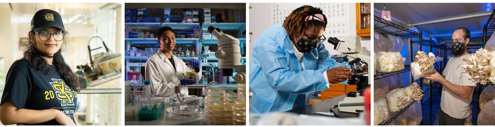

Here at KSU we offer various opportunities and resources to help our students, faculty, and community. We have researches happening around the campus for all of the departments. Further, we have specific services and resuorces for students which inculde Academic resources, students life, financial, and services.
